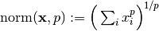
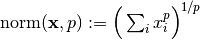
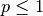
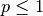
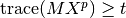
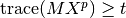

Warning
You are consulting the doc of a former version of PICOS. The latest version is HERE.
Expression¶
- class picos.Expression(string)¶
The parent class of AffinExp (which is the parent class of Variable), Norm, LogSumExp, and QuadExp.
AffinExp¶
- class picos.AffinExp(factors=None, constant=None, size=(1, 1), string='0')¶
A class for defining vectorial (or matrix) affine expressions. It derives from Expression.
Overloaded operators
+: sum (with an affine or quadratic expression) +=: in-place sum (with an affine or quadratic expression) -: substraction (with an affine or quadratic expression) or unitary minus *: multiplication (by another affine expression or a scalar) ^: hadamard product (elementwise multiplication with another affine expression, similarly as MATLAB operator .* ) /: division (by a scalar) |: scalar product (with another affine expression) [.]: slice of an affine expression abs(): Euclidean norm (Frobenius norm for matrices) **: exponentiation (works with arbitrary powers for constant affine expressions, and any nonzero exponent otherwise). In the case of a nonconstant affine expression, the exponentiation returns a quadratic expression if the exponent is 2, or a TracePow_Exp object for other exponents. A rational approximation of the exponent is used, and the power inequality is internally replaced by an equivalent set of second order cone inequalities. &: horizontal concatenation (with another affine expression) //: vertical concatenation (with another affine expression) <: less or equal (than an affine or quadratic expression) >: greater or equal (than an affine or quadratic expression) ==: is equal (to another affine expression) <<: less than inequality in the Loewner ordering (linear matrix inequality  ); or, if the right hand side is a Set,
membership in this set.
); or, if the right hand side is a Set,
membership in this set.>>: greater than inequality in the Loewner ordering (linear matrix inequality  )
)Warning
We recall here the implicit assumptions that are made when using relation operator overloads, in the following two situations:
- the rotated second order cone constraint abs(exp1)**2 < exp2 * exp3 implicitely assumes that the scalar expression exp2 (and hence exp3) is nonnegative.
- the linear matrix inequality exp1 >> exp2 only tells picos that the symmetric matrix whose lower triangular elements are those of exp1-exp2 is positive semidefinite. The matrix exp1-exp2 is not constrained to be symmetric. Hence, you should manually add the constraint exp1-exp2 == (exp1-exp2).T if it is not clear from the data that this matrix is symmetric.
- H¶
Hermitian (or conjugate) transposition
- T¶
transposition
- Tx¶
Partial transposition (for an n**2 x n**2 matrix, assumes subblocks of size n x n). cf. doc of picos.partial_transpose()
- conj¶
complex conjugate
- constant = None¶
constant of the affine expression, stored as a cvxopt sparse matrix.
- factors = None¶
dictionary storing the matrix of coefficients of the linear part of the affine expressions. The matrices of coefficients are always stored with respect to vectorized variables (for the case of matrix variables), and are indexed by instances of the class Variable.
- hadamard(fact)¶
hadamard (elementwise) product
- imag¶
imaginary part (for complex expressions)
- is0()¶
is the expression equal to 0 ?
- isconstant()¶
is the expression constant (no variable involved) ?
- real¶
real part (for complex expressions)
- size¶
size of the affine expression
- value¶
value of the affine expression
- vtype¶
vtype (for complex and antisym variables)
Variable¶
- class picos.Variable(parent_problem, name, size, Id, startIndex, vtype='continuous', lower=None, upper=None)¶
This class stores a variable. It derives from AffinExp.
- Id = None¶
An integer index (obsolete)
- bnd¶
var.bnd[i] returns a tuple (lo,up) of lower and upper bounds for the ith element of the variable var. None means +/- infinite. if var.bnd[i] is not defined, then var[i] is unbounded.
- endIndex¶
end position in the global vector of all variables
- name = None¶
The name of the variable (str)
- parent_problem = None¶
The Problem instance to which this variable belongs
- passed = None¶
list of solvers which are already aware of this variable
- semiDef¶
True if this is a sym. variable X subject to X>>0
- set_lower(lo)¶
sets a lower bound to the variable (lo may be scalar or a matrix of the same size as the variable self). Entries smaller than -INFINITY = -1e16 are ignored
- set_sparse_lower(indices, bnds)¶
sets the lower bound bnds[i] to the index indices[i] of the variable. For a symmetric matrix variable, bounds on elements in the upper triangle are ignored.
Parameters: - indices (list) – list of indices, given as integers (column major order) or tuples (i,j).
- bnds – list of lower bounds.
Warning
This function does not modify the existing bounds on elements other than those specified in indices.
Example:
>>> import picos as pic >>> P = pic.Problem() >>> X = P.add_variable('X',(3,2),lower = 0) >>> X.set_sparse_upper([0,(0,1),1],[1,2,0]) >>> X.bnd {0: (0.0, 1.0), 1: (0.0, 0.0), 2: (0.0, None), 3: (0.0, 2.0), 4: (0.0, None), 5: (0.0, None)}
- set_sparse_upper(indices, bnds)¶
sets the upper bound bnds[i] to the index indices[i] of the variable. For a symmetric matrix variable, bounds on elements in the upper triangle are ignored.
Parameters: - indices (list) – list of indices, given as integers (column major order) or tuples (i,j).
- bnds – list of upper bounds.
Warning
This function does not modify the existing bounds on elements other than those specified in indices.
- set_upper(up)¶
sets an upper bound to the variable (up may be scalar or a matrix of the same size as the variable self). Entries larger than INFINITY = 1e16 are ignored
- startIndex¶
starting position in the global vector of all variables
- value¶
value of the variable. The value of a variable is defined in the following two situations:
- The user has assigned a value to the variable, by using either the present value attribute, or the function set_var_value() of the class Problem. Note that manually giving a value to a variable can be useful, e.g. to provide a solver with an initial solution (see the option hotstart documented in set_all_options_to_default())
- The problem involving the variable has been solved, and the value attribute stores the optimal value of this variable.
- vtype¶
one of the following strings:
- ‘continuous’ (continuous variable)
- ‘binary’ (binary 0/1 variable)
- ‘integer’ (integer variable)
- ‘symmetric’ (symmetric matrix variable)
- ‘antisym’ (antisymmetric matrix variable)
- ‘complex’ (complex matrix variable)
- ‘hermitian’ (complex hermitian matrix variable)
- ‘semicont’ (semicontinuous variable [can take the value 0 or any other admissible value])
- ‘semiint’ (semi integer variable [can take the value 0 or any other integer admissible value])
Norm¶
- class picos.Norm(exp)¶
Euclidean (or Frobenius) norm of an Affine Expression. This class derives from Expression.
Overloaded operators
**: exponentiation (only implemented when the exponent is 2) <: less or equal (than a scalar affine expression) - exp = None¶
The affine expression of which we take the norm
QuadExp¶
- class picos.QuadExp(quad, aff, string, LR=None)¶
Quadratic expression. This class derives from Expression.
Overloaded operators
+: addition (with an affine or a quadratic expression) -: substraction (with an affine or a quadratic expression) or unitary minus *: multiplication (by a scalar or a constant affine expression) <: less or equal than (another quadratic or affine expression). >: greater or equal than (another quadratic or affine expression). - LR = None¶
stores a factorization of the quadratic expression, if the expression was entered in a factorized form. We have:
- LR=None when no factorization is known
- LR=(aff,None) when the expression is equal to ||aff||**2
- LR=(aff1,aff2) when the expression is equal to aff1*aff2.
- aff = None¶
affine expression representing the affine part of the quadratic expression
LogSumExp¶
- class picos.LogSumExp(exp)¶
- Log-Sum-Exp applied to an affine expression.
- If the affine expression z is of size
 ,
with elements
,
with elements  ,
then LogSumExp(z) represents the expression
,
then LogSumExp(z) represents the expression
 .
This class derives from Expression.
.
This class derives from Expression.
Overloaded operator
<: less or equal than (the rhs must be 0, for geometrical programming) - value¶
value of the logsumexp expression
GeoMeanExp¶
- class picos.GeoMeanExp(exp)¶
A class storing the geometric mean of a multidimensional expression. It derives from Expression.
Overloaded operator
>: greater or equal than (the rhs must be a scalar affine expression) - exp = None¶
The affine expression to which the geomean is applied
NormP_Exp¶
- class picos.NormP_Exp(exp, numerator, denominator=1, num2=None, den2=1)¶
A class storing the p-norm of a multidimensional expression. It derives from Expression. Use the function picos.norm() to create a instance of this class. This class can also be used to store the
 norm of a matrix.
norm of a matrix.Generalized norms are also defined for
 , by using the usual formula
. Note that this function
is concave (for ) over the set of vectors with nonnegative coordinates.
When a constraint of the form
, by using the usual formula
. Note that this function
is concave (for ) over the set of vectors with nonnegative coordinates.
When a constraint of the form  with 
is entered, PICOS implicitely forces
with 
is entered, PICOS implicitely forces  to be a nonnegative vector.
to be a nonnegative vector.Overloaded operator
<: less or equal than (the rhs must be a scalar affine expression, AND p must be greater or equal than 1) >: greater or equal than (the rhs must be a scalar affine expression, AND p must be less or equal than 1) - den2 = None¶
denominator of q
- denominator = None¶
denominator of p
- exp = None¶
The affine expression to which the p-norm is applied
- num2 = None¶
numerator of q
- numerator = None¶
numerator of p
TracePow_Exp¶
- class picos.TracePow_Exp(exp, numerator, denominator=1, M=None)¶
A class storing the pth power of a scalar, or more generally the trace of the power of a symmetric matrix. It derives from Expression. Use the function picos.tracepow() or simply the overloaded ** exponentiation operator to create an instance of this class.
Note that this function is concave for
 , and convex for the other values of
, and convex for the other values of  over the set of nonnegative variables exp
(resp. over the set of positive semidefinite matrices exp), and PICOS implicitely forces
the constraint exp >0 (resp. exp >> 0) to hold.
over the set of nonnegative variables exp
(resp. over the set of positive semidefinite matrices exp), and PICOS implicitely forces
the constraint exp >0 (resp. exp >> 0) to hold.Also, when a coef matrix
 is specified (for constraints of the
form ),
the matrix must be positive semidefinite and must be in
is specified (for constraints of the
form ),
the matrix must be positive semidefinite and must be in ![(0,1]](_images/math/1f7a1dadc95924803fb84820bde2253aa05b9a71.png) .
.Overloaded operator
<: less or equal than (the rhs must be a scalar affine expression, AND p must be either greater or equal than 1 or negative) >: greater or equal than (the rhs must be a scalar affine expression, AND p must be in the range )- M = None¶
the coef matrix
- denominator = None¶
denominator of p
- dim = None¶
dimension of exp
- exp = None¶
The affine expression to which the p-norm is applied
- numerator = None¶
numerator of p
DetRootN_Exp¶
- class picos.DetRootN_Exp(exp)¶
A class storing the nth root of the determinant of a positive semidefinite matrix. It derives from Expression. Use the function picos.detrootn() to create an instance of this class. Note that the matrix
 is forced to be positive semidefinite
when a constraint of the form t < pic.detrootn(X) is added.
is forced to be positive semidefinite
when a constraint of the form t < pic.detrootn(X) is added.Overloaded operator
>: greater or equal than (the rhs must be a scalar affine expression) - dim = None¶
dimension of exp
- exp = None¶
The affine expression to which the det-root-n is applied
Ball¶
- class picos.Ball(p, radius)¶
represents a Ball of Norm p. This object should be created by the function picos.ball() .
** Overloaded operators **
>>: membership of the right hand side in this set.
Truncated_Simplex¶
- class picos.Truncated_Simplex(radius=1, truncated=False, nonneg=True)¶
represents a simplex, that can be intersected with the ball of radius 1 for the infinity-norm (truncation), and that can be symmetrized with respect to the origin. This object should be created by the function picos.simplex() or picos.truncated_simplex() .
** Overloaded operators **
>>: membership of the right hand side in this set.